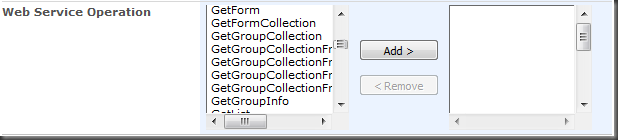
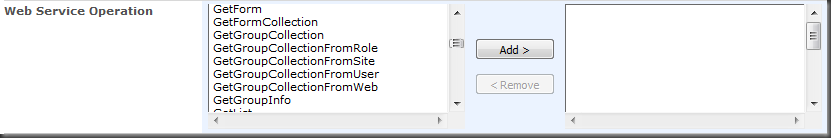

SPSetMultiSelectSizes
Function
$().SPServices.SPSetMultiSelectSizes
Certification


Functionality
The SPSetMultiSelectSizes function sets the sizes of the multi-select boxes for a column on a form automagically based on the values they contain. The function takes into account the fontSize, fontFamily, fontWeight, etc., in its algorithm.
NOTE: If you are also calling SPCascadeDropdowns for a column, it's best to call SPSetMultiSelectSizes first. This way, SPSetMultiSelectSizes will take into account all of the potentially available values and adjust the multi-select boxes accordingly. SPSetMultiSelectSizes does not re-fire as the selection is changed.
Syntax
$().SPServices.SPSetMultiSelectSizes({
multiSelectColumn: "",
minWidth: 0,
maxWidth: 0
});
multiSelectColumn
The DisplayName of the multi-select column in the form.
minWidth
If present, the width of the multi-select boxes will not be set narrower than this number of pixels. If either minWidth or maxWidth is greater than zero, then they provide the lower and upper bounds (in pixels) for the width of the multi-select boxes.
maxWidth
If present, the width of the multi-select boxes will not be set wider than this number of pixels. If either minWidth or maxWidth is greater than zero, then they provide the lower and upper bounds (in pixels) for the width of the multi-select boxes.
Examples
In the example below, I'm calling the function for the Web Service Operations multi-select column. As you can see in the image below, quite a few of the available options are too long for the multi-select picker as it is rendered out of the box. While you can scroll to the right to see the rest of the values, this can often lead to mistakes in data entry. As you can see, it would be very easy to choose the wrong value from among those which start with "GetGroupCollection" unless you scroll to the right.

$(document).ready(function() {
$().SPServices.SPSetMultiSelectSizes({
multiSelectColumn: "Web Service Operation"
});
// You can include other script which you want to run at page load in this block as well
});
After the function call, the multi-select picker is widened appropriately based on the contents of the picker, regardless of the font characteristics. (Note that there is an even longer option below for GetRolesAndPermissionsForCurrentUser.) Because the function's algorithm works based on a jQuery clone() of the original select, it works fine with any font, whether it is proportionally or fix spaced.
